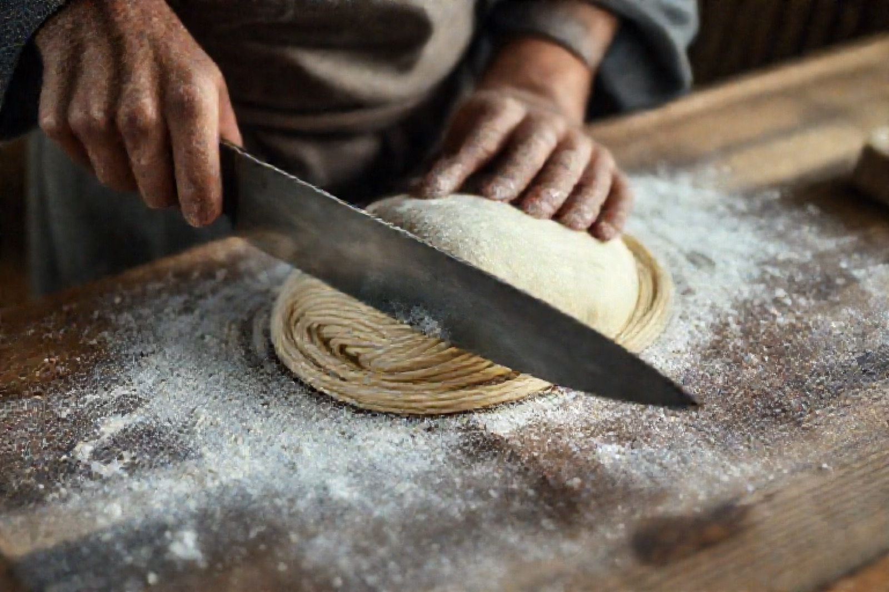

ホール
お客様のご案内と配膳、片付け。静かな時間を大切にする接客です。

ばんだい庵
スタッフ募集
会津・磐梯町の古民家で、ホール・厨房・甘味のスタッフを募集しています。未経験から。
小さな古民家の蕎麦屋です。
蕎麦打ちから甘味の仕込み、接客まで——急がず、手仕事を覚えていける場所です。
募集職種
お客様のご案内と配膳、片付け。静かな時間を大切にする接客です。

茹で・盛り付けから。ゆくゆくは蕎麦打ちも。手仕事を一から覚えられます。

湧水を使った季節の和菓子の仕込み。丁寧な下ごしらえが中心です。
募集要項